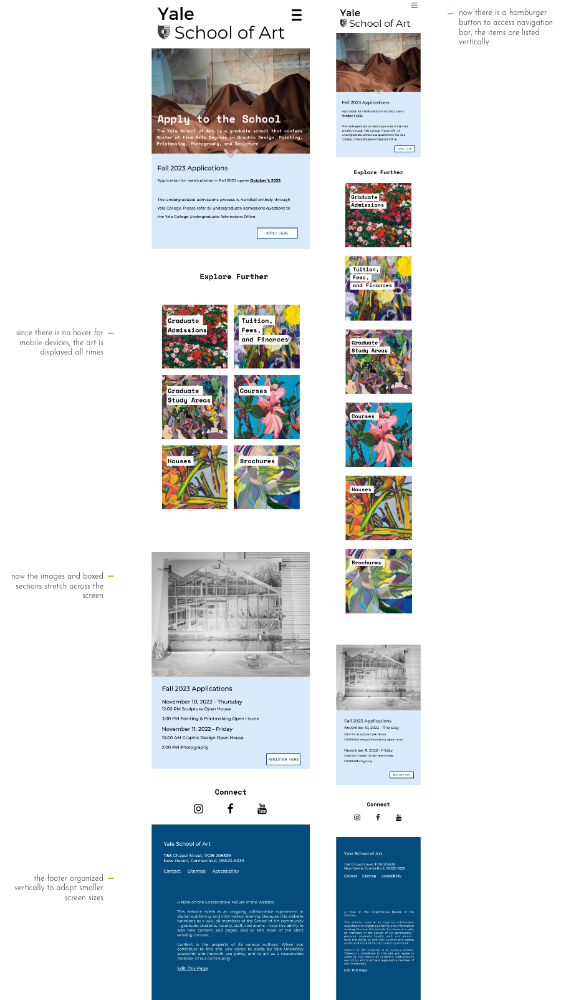

Responsive Redesign
Redesigning Yale School of Art's Website
Responsive Redesign is a project I have done as a part of my CSCI1300: User Interface and User Experiences course at Brown University. My task was to analyze and identify flaws in an existing interface, create low-fidelity and high-fidelity prototypes for various screen sizes, and build a responsive website based on those prototypes.
Identifying Usability Problems
Case Study: Yale School of Art Website
I chose Yale School of Art's website because it is one of the most notorious web pages in terms of its UI/UX design, as it allows anyone from the school community to edit the pages.
Usability Problems
Usability assesses the ease of use of a certain design by different types of users. I will list the main components of usability to assess the problems in the UI/UX design of Yale School of Art's Website.
Intuitive Design
How well do the intuitions of users match the website design?
How well do the intuitions of users match the website design?
The navigation bar is located on the left side of the page, rather than on top. Log-in information is also located at the bottom left side of the layout. The grids are not equal, and there is some unexpected information on the application page. Social links are located at the bottom, which is expected, but they are formatted as text rather than icons. Options of "page history" and "edit this page" are surprising as they are not frequently available on websites.
Learnability
How easy is it for new users to navigate and accomplish basic tasks on their first encounter with the design?
How easy is it for new users to navigate and accomplish basic tasks on their first encounter with the design?
The website is filled with small-font links, some of which are hidden by the animated background images. Furthermore, navigation is quite confusing, and finding any type of information requires multiple scrolls over the page.
Efficiency
How quickly can users perform the tasks that they aim to accomplish?
How quickly can users perform the tasks that they aim to accomplish?
Big images and clustered information make it difficult for users to parse through the information. Some links end up in unexpected places, decreasing the efficiency of use.
Memorability
How easy is it for returning users to recall the design of the webpage after a period of not using it?
How easy is it for returning users to recall the design of the webpage after a period of not using it?
The website is poorly organized, any text or image might be the link or information that the user is looking for. Therefore, it is difficult to remember what each page and link contains. The excessive and frequently updated use of background images and inconsistent coloring add another layer of difficulty.
Errors and Satisfaction
How many errors do users encounter when using the website? Is the recovery easy? What is the overall satisfaction level?
How many errors do users encounter when using the website? Is the recovery easy? What is the overall satisfaction level?
As mentioned in previous sections, confusing links may lead to many errors. The bright images, lack of consistency across pages, inconsistent use of fonts, and unexpected links and landing pages significantly reduce the level of satisfaction.
Accesibility Problems
WebAIM WAVE detected no contrast errors, which was quite surprising as the web page is quite tiring to look at. However, the system found many problems in the hierarchical structure, which I fully agree with: it is quite difficult to separate headers, body, and navigation tools from each other.
Visual Redesign
Low-Fidelity Prototyping
Using Balsamiq, I have created three low-fidelity wireframes to sketch my initial ideas and layout. These sketches aim to show my design differences between desktop, tablet, and mobile views as well.
Visual Design Style Guide
Below is the visual design style guide I created during my redesigning process. You can find some of the major and consistent design choices I made here.
High-Fidelity Prototyping
Using Figma, I created three high-fidelity prototypes before launching the redesigned website. These sketches aim to show my design differences between desktop, tablet, and mobile views as well. Below the slideshow, which includes detailed annotations of my prototype design, you can find the full prototyles.

The Link to My Redesigned Website
You can find the redesigned version of Yale School of Arts "Apply" page, here. If the hyperlink doesn't work, copy the following link: https://zaydin13.github.io/responsive-redesign/